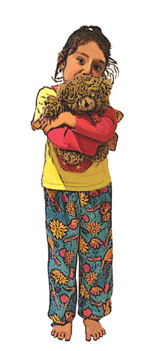

Childhood Illnesses and Conditions
Childhood Illnesses and Conditions
This section is not meant to be the definitive answer for the treatment and care of childhood illnesses. It is meant to be an informative guide to recognising the common signs and symptoms associated with the medical conditions. There is no substitute for a doctor (GP), so if any child you are involved with becomes unwell and exhibits unfamiliar signs and symptoms, contact the family GP or the ambulance service immediately.
Most common childhood diseases are preventable, and prophylactic measures in the form of immunisation are readily available. Unfortunately, incidents of some of the more serious diseases such as Whooping Cough and Measles/Rubella are on the increase because some children in the 'at risk' age group are not being inoculated against the diseases.
There are many social reasons why some children are not immunised, but few 'reasons' provide comfort to a child infected with a potentially fatal disease. It is true that there is a risk of a tiny percentage of children having an adverse reaction to certain inoculations. However, the risk of serious illness by not immunising children against diseases is far greater. If you are unsure about immunisation and have any misgivings, contact your GP or your local children's medical health facility for advice.
Bronchiolitis
Bronchiolitis is a chest condition caused by an infection by a virus causing a persistent inflammation of the bronchial tree (air passages) of the lungs, and often occurs in infants in the first year of life and it usually happens in winter. Bronchiolitis gets better in a week to ten days. While not life-threatening, some children develop asthma after having bronchiolitis.

Signs and Symptoms
 dry cough
dry cough
 slight fever (approx. 38ºc)
slight fever (approx. 38ºc)
 mild chest discomfort
mild chest discomfort
 wheezing
wheezing
 uncomfortable respirations
uncomfortable respirations

Care and Treatment
 give lots of fluids, such as an extra bottle or two per day, or give more frequent breastfeeds. Feeding may be difficult, so try offering smaller feeds more often
give lots of fluids, such as an extra bottle or two per day, or give more frequent breastfeeds. Feeding may be difficult, so try offering smaller feeds more often
 medication is not very effective, so consult your doctor if your child has difficulty with breathing, feeding or sleeping
medication is not very effective, so consult your doctor if your child has difficulty with breathing, feeding or sleeping
Chickenpox (Varicella)
Chickenpox is very contagious. It is a viral disease, usually mild in children. It can be more serious in adults. Complications from the disease are rare, and are usually restricted to infections of the Chickenpox blisters.

Signs and Symptoms
 mild fever (38-40ºc)
mild fever (38-40ºc)
 illness for 1 or 2 days
illness for 1 or 2 days
 skin eruptions or blisters that appear anywhere on the body, including:
skin eruptions or blisters that appear anywhere on the body, including:
 mouth
mouth
 nose
nose
 penis
penis
 vagina
vagina
 head
head
Limbs are least affected. The blisters form scabs after 24 hours, and new blisters appear every 2 – 3 days.

Care and Treatment
 the application of cool compresses reduces the 'itchiness' of the blisters and discourages scratching by the child.
the application of cool compresses reduces the 'itchiness' of the blisters and discourages scratching by the child.
 contact your GP or local child health centre for advice.
contact your GP or local child health centre for advice.
A vaccine has been developed to prevent Chickenpox.
Measles
The common form of measles is a serious viral illness that infects the skin and, more importantly, the respiratory tract.
Measles is highly contagious, and can be fatal to those communities that have no historical immunity, such as the indigenous population. The incubation period is 7-12 days after exposure, and possible complications associated with the disease are pneumonia, meningitis or encephalitis. Measles is becoming more common in the community after a period of low incidence.

Signs and Symptoms
 fever (39ºc+)
fever (39ºc+)
 sneezing
sneezing
 runny nose
runny nose
 harsh, hacking, dry cough
harsh, hacking, dry cough
 red eyes sensitive to light
red eyes sensitive to light
 white spots in the mouth and throat
white spots in the mouth and throat
 red rash spreading from the ears and forehead to the rest of the body
red rash spreading from the ears and forehead to the rest of the body

Care and Treatment
 contact your GP for treatment and advice
contact your GP for treatment and advice
 encourage the child not to watch TV or read as this exacerbates the child's sensitivity to light and makes the eyes irritable
encourage the child not to watch TV or read as this exacerbates the child's sensitivity to light and makes the eyes irritable
 keep constant observation of the child's temperature
keep constant observation of the child's temperature
A vaccine against measles is available and recommended for children between 12 and 15 months. It is combined with the mumps and rubella vaccines.
German Measles (Rubella)
Rubella is a viral illness, usually mild in onset. The danger with this illness is in the spread to pregnant women. A woman who contracts rubella in the first 3 or 4 months of pregnancy is at risk of giving rise to severe defects in the unborn child. Rubella is preventable by immunisation, and all non-pregnant females of child-bearing age should be immunised.

Signs and Symptoms
 slight fever
slight fever
 muscle aches
muscle aches
 stiff neck, fatigue
stiff neck, fatigue
 slight red rash on the child's head and body after 2-3 days
slight red rash on the child's head and body after 2-3 days
 swollen neck lymph glands
swollen neck lymph glands

Care and Treatment
 contact your GP for advice
contact your GP for advice
 ensure that your child does not have known contact with pregnant women
ensure that your child does not have known contact with pregnant women
The child usually recovers within a week.
Tonsillitis (Pharyngitis)
Tonsillitis is the inflammation of the lymph tissue at the back of the throat. Tonsils are at their largest, and most susceptible to infection, between the ages of 4 years and puberty. There are many possible, highly contagious, bacterial and viral causes of tonsillitis.

Signs and Symptoms
 pain in the throat
pain in the throat
 difficulty swallowing
difficulty swallowing
 chills
chills
 fever (40ºc or greater)
fever (40ºc or greater)
 swollen glands above the jaw
swollen glands above the jaw
 headache, earache
headache, earache
 cough (rarely)
cough (rarely)
Contact your GP or child health centre for advice. Some infections indicate that antibiotics may be required. Repeated bouts of tonsillitis may necessitate surgery to remove the tonsils.